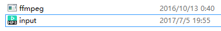
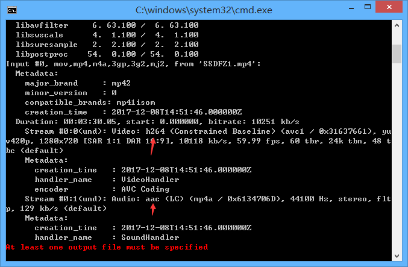
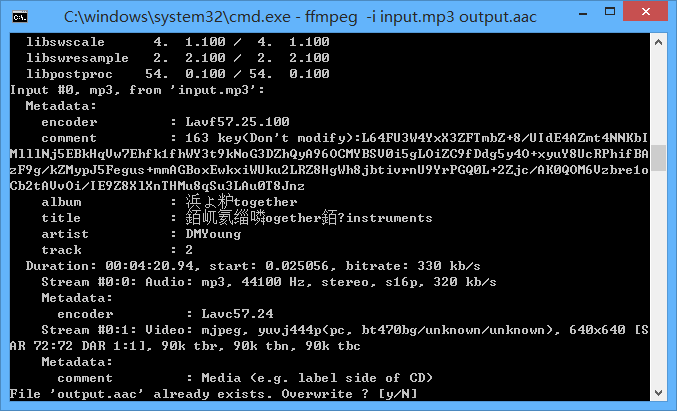
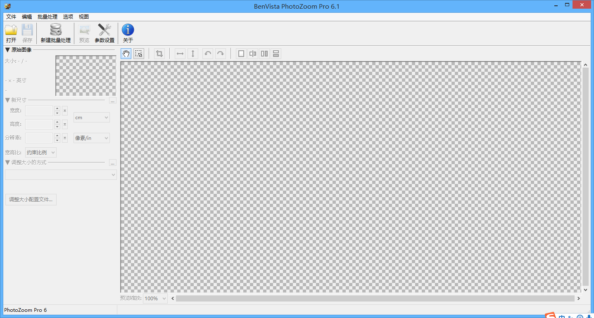
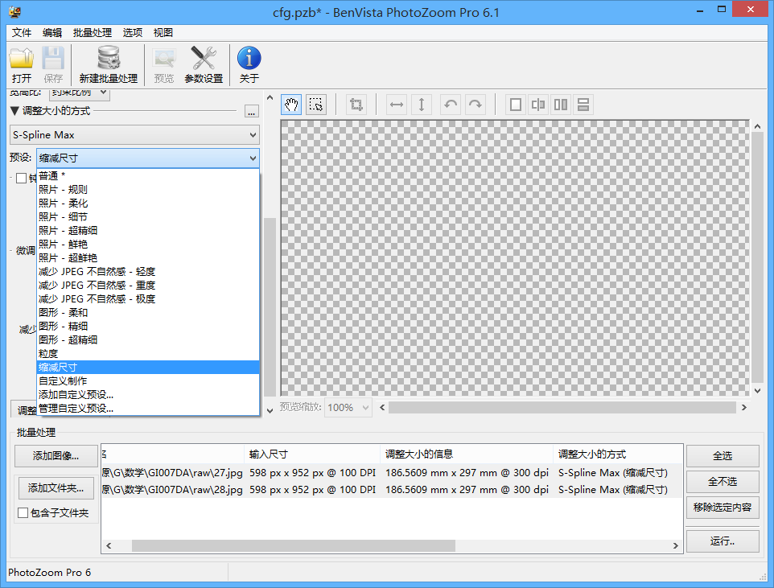
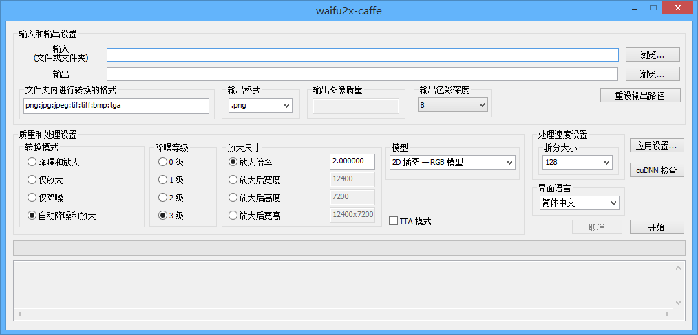
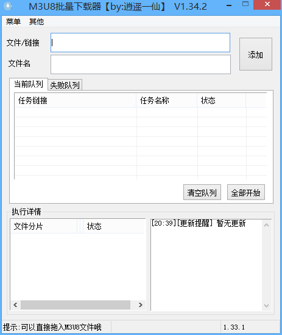

一些软件
FFMPEG
- 官方网站：http://ffmpeg.org/
- 注意：
- 不要下载源码
- 只需要ffmpeg.exe起作用
- 不想下载/找不到下载地？
- 在JJdown Client（./OrderEXE） / m3u8批量下载器(根目录) 中有
正常操作（推荐）
- 将ffmpeg.exe和文件一起放到一个文件夹中（防止找不到）
- 改个方便打的名字（如果名字有空格，在两边用英文双引号括起来，如”233 666 8888.mp3”） 
命令表
- 更多命令请百度，mp4可换成mp3，关键参数已斜体，00:00:00=时分秒：
- http://demo.ekuai.tech/ffmpeg
- 命令输入：在当前目录打开命令窗口（Win10如何有该选项看基本操作）
警告
- 转码之中除非要终止，不要按键盘，
否则你可能会想砸键盘 ，讲不准就按到了某个查看详细信息的按钮 - 查看详细信息会慢到你想砸电脑
- 如果不慎按到了，还是重来吧
编码转换
ffmpeg -i input.flv output.mp4
视频截取
ffmpeg -ss 00:10:00 -t 00:15:00 -accurate_seek -i input.mp4 -codec copy output.mp4
视频合成
ffmpeg -i "concat:input1.mp4|input2.mp4|input3.mp4" -c copy output.mp4
视频属性查看
ffmpeg -i input.mp4
抽取音频
ffmpeg -i input.mp4 -vn -y -acodec copy output.aac
抽取视频
ffmpeg -i input.mp4 -vcodec copy –an output.mp4
音视频合成
ffmpeg -i input.mp4 -i input.mp3 -vcodec copy -acodec copy output.mp4
真·操作示例
视频属性查看
- 导出注意格式（aac和mp3可以导出后转码（上方有命令）） 
文件覆盖
- 如果输出文件存在，会报以下内容，输入y覆盖，输入n终止 
PhotoZoom
基本操作
- 一款图片放大
（马赛克处理）软件，拖入图片，左上角调整图片大小，左下角调整放大算法 
批量操作
- 先导入图片（推荐长宽比相同），全选，修改预设或配置，运行 
推荐配置
- 普通处理（不管放大缩小），都可以选择缩减尺寸预设
- 根据其他的需求也可自行修改观察效果
Waifu2X
提示
- 网页版只支持小于1.5k像素，最大放大倍数为2倍
- 所以推荐使用客户端
客户端Waifu2X-Caffee
 依旧使用神经网络算法计算，NVIDIA显卡可以使用CUDA计算（较快），否则只能使用CPU计算 请根据自己的电脑&显卡实际情况选择放大倍数（放大后宽高），推荐分多次进行放大，避免耗时且失败 在放大过程中不会有进度条，时间显示未知（可能只有放大文件夹会有吧），在放大完成后会显示时间 耐心等待，时间是分钟级别的 * 实测：放大过多会死机（显卡驱动挂掉），测试时候宽高大约1.3w会死机（画面冻结，没有蓝屏）
二林奇店QSV格式转换器
- QSV to flv
Registry Workshop
- 注册表编辑器，搜索算法比系统自带的好一些
- Origin
- 微云中有
FreeRename
- 文件重命名，如果重命名失败，查看文件是否已经打开，或是文件名是否重复
小技巧
- 可以用于图片之类排序，便于今后进行批量导入等操作
- 排序：将某图片提前到编号14前可以重命名为14..，14.，14+以此类推，然后重命名即可
- 可以设置重命名诸如pic-xx和pic---xx交替进行，避免重复终止命名
M3U8批量下载器
- 详见M3U8篇 
YunDownload
- 百度云不限速下载器
ProxyeeDown
- 百度云不限速下载器